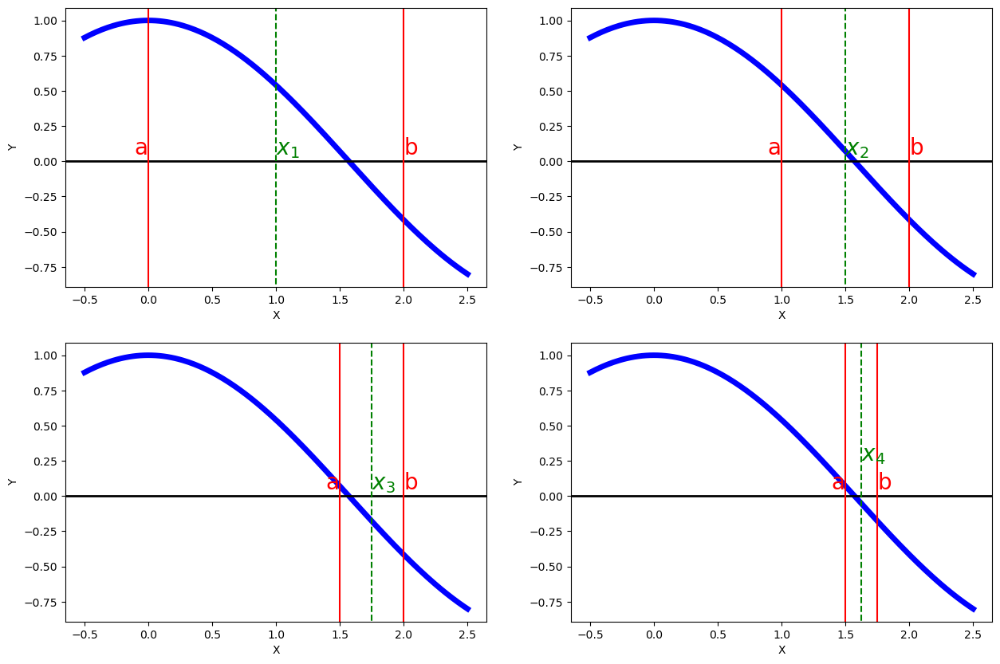

2.6. Bisection method#
2.6.1. Algorithm#
Consider a function \(f:[a,b]\rightarrow\mathbb{R}\), continuous on \([a,b]\), with \(f(a)\,f(b)<0\).
That is, we are considering a function that satisfies the hypotheses of Bolzano’s theorem, so we already know that there exists a root of \(f\) in the interval \([a,b]\). Once we know that a root exists, the next step would be to compute it. This is not always easy (in fact, almost never), and in some cases it is outright impossible. So a second option arises: to approximate that root by means of a numerical method.
At this point, there are different numerical methods that allow us to approximate the root of a function. We are now going to explain the simplest of them: the bisection method, also known as the binary search method. In the next chapter we will explain the Newton-Raphson method, which is more efficient numerically.
To approximate a root of \(f\) in \([a,b]\) by bisection, the idea is very simple: we keep dividing the interval in half and keep the half on which Bolzano’s hypotheses hold. That is:
Divide the given interval in half.
Take the midpoint of the interval, \(c\), as an approximation of the root.
Check which of the 2 resulting subintervals (\([a,c]\) or \([c,b]\)) satisfies Bolzano’s hypothesis.
Repeat the process.
If we write it in a way closer to how we will program it, we arrive at the bisection algorithm:
Initialize \(\, [a_1,b_1]=[a,b]\).
For \(\,k=1,2,\ldots, N_{\text{max}}\):
Compute \(\,x_k=\displaystyle\frac{a_k+b_k}{2}\).
If \(\, f(a_k)\,f(x_k)<0\), update \([a_{k+1},b_{k+1}]=[a_k,x_k]\).
Otherwise, \([a_{k+1},b_{k+1}]=[x_k,b_k]\).
Carry out a stopping test. If it is satisfied, stop the algorithm.
Continue iterating.
As for the stopping test, the most common thing is to base it on the relative difference between 2 consecutive iterations. For a tolerance parameter \(tol\), usually specified by the user, it would be something like this:
Theorem (Error estimate)
Let \(f:[a,b]\rightarrow\mathbb{R}\) be a continuous function on \([a,b]\) such that \(f(a)\,f(b)<0\). Let \(\alpha\in(a,b)\) be such that \(f(\alpha)=0\). Then, when applying the bisection method on the interval \([a,b]\), the maximum error committed at step \(k\) is bounded by the following formula:
We now continue by showing you how to program this algorithm in Numpy.
For the moment, we will write it directly, just as we have done in the algorithm. Later we will see how to isolate part or all of the algorithm in a function, which will allow us to carry out structured programming.
import numpy as np
import sympy as sp
x = sp.symbols('x', real=True)
f_expr = sp.cos(x)
f = sp.Lambda(x,f_expr)
N_max = 100
tol = 1.e-5
a = 0.
b = 2.
x_aprox = np.zeros(N_max)
for k in range(0,N_max):
x_aprox[k] = (a+b) / 2
if f(x_aprox[k]) == 0: break
if f(a) * f(x_aprox[k]) < 0:
b = x_aprox[k]
else:
a = x_aprox[k]
err_relativo = np.abs( x_aprox[k]-x_aprox[k-1] ) / np.abs( x_aprox[k] )
if ( (k > 0) and ( err_relativo < tol ) ): break
print('Number of iterations performed: ', k+1)
# NOTE: We count one more, k+1, because we start the loop at 0
print('Approximation of the root: ', x_aprox[k])
Number of iterations performed: 17
Approximation of the root: 1.5707855224609375
Let us graphically represent the first steps of the algorithm in this case:
import matplotlib as mp
import matplotlib.pyplot as plt
mp.__version__
%matplotlib inline
# We create function plots
x1 = np.linspace(-0.5, 2.5, 200)
y1 = np.cos(x1)
fig, axs = plt.subplots(2, 2, figsize=(15,10))
ax1 = axs[0,0]
ax1.plot(x1, y1, c='b', lw='5')
ax1.set_ylabel('Y', fontsize=10)
ax1.set_xlabel('X', fontsize=10)
ax1.axhline(y=0., c='black', lw='2')
ax1.axvline(x=0., ymin=-1, ymax=1, c='r')
ax1.text(-0.11, 0.05, 'a', c='r', fontsize=20)
ax1.axvline(x=2., ymin=-1, ymax=1, c='r')
ax1.text(2, 0.05, 'b', c='r', fontsize=20)
ax1.axvline(x=1., ymin=-1, ymax=1, c='g', ls='--')
ax1.text(1, 0.05, '$x_1$', c='g', fontsize=20)
ax2 = axs[0,1]
ax2.plot(x1, y1, c='b', lw='5')
ax2.set_ylabel('Y', fontsize=10)
ax2.set_xlabel('X', fontsize=10)
ax2.axhline(y=0., c='black', lw='2')
ax2.axvline(x=1., ymin=-1, ymax=1, c='r')
ax2.text(0.89, 0.05, 'a', c='r', fontsize=20)
ax2.axvline(x=2., ymin=-1, ymax=1, c='r')
ax2.text(2, 0.05, 'b', c='r', fontsize=20)
ax2.axvline(x=1.5, ymin=-1, ymax=1, c='g', ls='--')
ax2.text(1.5, 0.05, '$x_2$', c='g', fontsize=20)
ax3 = axs[1,0]
ax3.plot(x1, y1, c='b', lw='5')
ax3.set_ylabel('Y', fontsize=10)
ax3.set_xlabel('X', fontsize=10)
ax3.axhline(y=0., c='black', lw='2')
ax3.axvline(x=1.5, ymin=-1, ymax=1, c='r')
ax3.text(1.39, 0.05, 'a', c='r', fontsize=20)
ax3.axvline(x=2., ymin=-1, ymax=1, c='r')
ax3.text(2, 0.05, 'b', c='r', fontsize=20)
ax3.axvline(x=1.75, ymin=-1, ymax=1, c='g', ls='--')
ax3.text(1.75, 0.05, '$x_3$', c='g', fontsize=20)
ax4 = axs[1,1]
ax4.plot(x1, y1, c='b', lw='5')
ax4.set_ylabel('Y', fontsize=10)
ax4.set_xlabel('X', fontsize=10)
ax4.axhline(y=0., c='black', lw='2')
ax4.axvline(x=1.5, ymin=-1, ymax=1, c='r')
ax4.text(1.39, 0.05, 'a', c='r', fontsize=20)
ax4.axvline(x=1.75, ymin=-1, ymax=1, c='r')
ax4.text(1.75, 0.05, 'b', c='r', fontsize=20)
ax4.axvline(x=1.625, ymin=-1, ymax=1, c='g', ls='--')
ax4.text(1.625, 0.25, '$x_4$', c='g', fontsize=20)
plt.show()

2.6.2. Links for further reading#
If we have not been clear enough, or if you want to expand your knowledge by consulting, for example, the proof of this last theorem, you can look at the following links (the Spanish version of Wikipedia is quite good in this case, but we think the algorithm is better written in the English version, which is why we include both):
2.6.3. Exercise for you to do#
Use the bisection method to approximate the root of the function \(f(x) = \ln\left(\tan(x)\right)\) on the interval \([0.1,1]\).
# WRITE YOUR CODE HERE
2.6.4. Exercises for a little more practice#
To practice a little more on what is explained in this topic, we recommend the following exercises from the wonderful blog https://existelimite.blogspot.com/, although it is possible that in them you will find some things (especially about the uniqueness of roots with Rolle’s theorem) that we have not yet told you about: